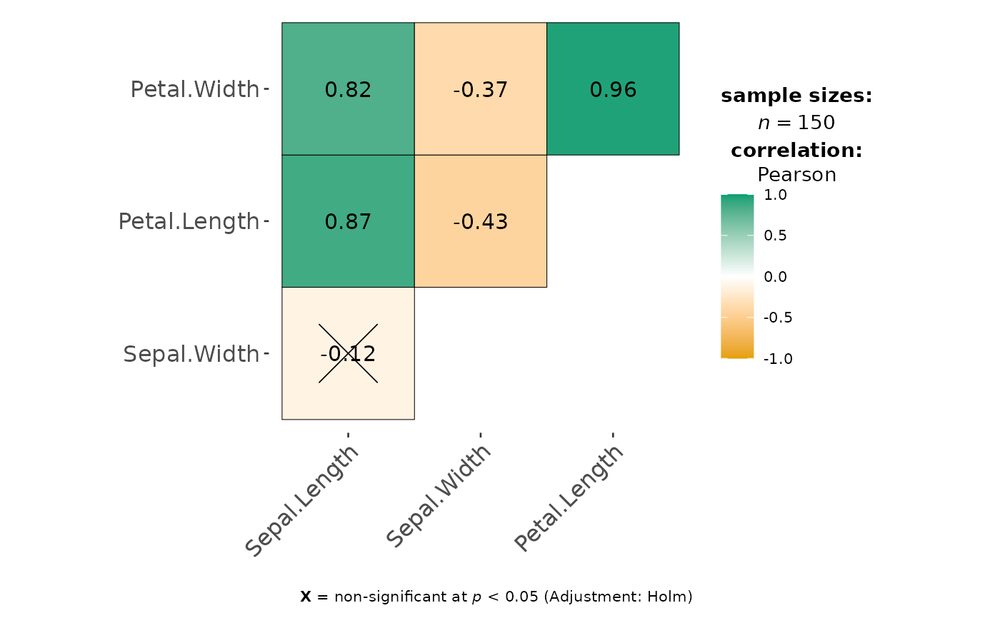

Correlation matrix or a data frame containing results from pairwise correlation tests.
Usage
ggcorrmat(
data,
cor.vars = NULL,
cor.vars.names = NULL,
output = "plot",
matrix.type = "upper",
type = "parametric",
tr = 0.2,
partial = FALSE,
k = 2L,
sig.level = 0.05,
conf.level = 0.95,
bf.prior = 0.707,
p.adjust.method = "holm",
pch = "cross",
ggcorrplot.args = list(method = "square", outline.color = "black", pch.cex = 14),
package = "RColorBrewer",
palette = "Dark2",
colors = c("#E69F00", "white", "#009E73"),
ggtheme = ggstatsplot::theme_ggstatsplot(),
ggplot.component = NULL,
title = NULL,
subtitle = NULL,
caption = NULL,
...
)Arguments
- data
Dataframe from which variables specified are preferentially to be taken.
- cor.vars
List of variables for which the correlation matrix is to be computed and visualized. If
NULL(default), all numeric variables fromdatawill be used.- cor.vars.names
Optional list of names to be used for
cor.vars. The names should be entered in the same order.- output
Character that decides expected output from this function. If
"plot", the visualization matrix will be returned. If"dataframe"(or literally anything other than"plot"), a data frame containing all details from statistical analyses (e.g., correlation coefficients, statistic values, p-values, no. of observations, etc.) will be returned.- matrix.type
Character,
"upper"(default),"lower", or"full", display full matrix, lower triangular or upper triangular matrix.- type
A character specifying the type of statistical approach:
"parametric""nonparametric""robust""bayes"
You can specify just the initial letter.
- tr
Trim level for the mean when carrying out
robusttests. In case of an error, try reducing the value oftr, which is by default set to0.2. Lowering the value might help.- partial
Can be
TRUEfor partial correlations. For Bayesian partial correlations, "full" instead of pseudo-Bayesian partial correlations (i.e., Bayesian correlation based on frequentist partialization) are returned.- k
Number of digits after decimal point (should be an integer) (Default:
k = 2L).- sig.level
Significance level (Default:
0.05). If the p-value in p-value matrix is bigger thansig.level, then the corresponding correlation coefficient is regarded as insignificant and flagged as such in the plot. Relevant only whenoutput = "plot".- conf.level
Scalar between
0and1(default:95%confidence/credible intervals,0.95). IfNULL, no confidence intervals will be computed.- bf.prior
A number between
0.5and2(default0.707), the prior width to use in calculating Bayes factors and posterior estimates. In addition to numeric arguments, several named values are also recognized:"medium","wide", and"ultrawide", corresponding to r scale values of 1/2, sqrt(2)/2, and 1, respectively. In case of an ANOVA, this value corresponds to scale for fixed effects.- p.adjust.method
Adjustment method for p-values for multiple comparisons. Possible methods are:
"holm"(default),"hochberg","hommel","bonferroni","BH","BY","fdr","none".- pch
Decides the point shape to be used for insignificant correlation coefficients (only valid when
insig = "pch"). Default:pch = "cross".- ggcorrplot.args
A list of additional (mostly aesthetic) arguments that will be passed to
ggcorrplot::ggcorrplotfunction. The list should avoid any of the following arguments since they are already internally being used:corr,method,p.mat,sig.level,ggtheme,colors,lab,pch,legend.title,digits.- package, palette
Name of the package from which the given palette is to be extracted. The available palettes and packages can be checked by running
View(paletteer::palettes_d_names).- colors
A vector of 3 colors for low, mid, and high correlation values. If set to
NULL, manual specification of colors will be turned off and 3 colors from the specifiedpalettefrompackagewill be selected.- ggtheme
A
{ggplot2}theme. Default value isggstatsplot::theme_ggstatsplot(). Any of the{ggplot2}themes (e.g.,theme_bw()), or themes from extension packages are allowed (e.g.,ggthemes::theme_fivethirtyeight(),hrbrthemes::theme_ipsum_ps(), etc.). But note that sometimes these themes will remove some of the details that{ggstatsplot}plots typically contains. For example, if relevant,ggbetweenstats()shows details about multiple comparison test as a label on the secondary Y-axis. Some themes (e.g.ggthemes::theme_fivethirtyeight()) will remove the secondary Y-axis and thus the details as well.- ggplot.component
A
ggplotcomponent to be added to the plot prepared by{ggstatsplot}. This argument is primarily helpful forgrouped_variants of all primary functions. Default isNULL. The argument should be entered as a{ggplot2}function or a list of{ggplot2}functions.- title
The text for the plot title.
- subtitle
The text for the plot subtitle. Will work only if
results.subtitle = FALSE.- caption
The text for the plot caption. This argument is relevant only if
bf.message = FALSE.- ...
Currently ignored.
Details
For details, see: https://indrajeetpatil.github.io/ggstatsplot/articles/web_only/ggcorrmat.html
Summary of graphics
| graphical element | geom used | argument for further modification |
| correlation matrix | ggcorrplot::ggcorrplot() | ggcorrplot.args |
Correlation analyses
The table below provides summary about:
statistical test carried out for inferential statistics
type of effect size estimate and a measure of uncertainty for this estimate
functions used internally to compute these details
Hypothesis testing and Effect size estimation
| Type | Test | CI available? | Function used |
| Parametric | Pearson's correlation coefficient | Yes | correlation::correlation() |
| Non-parametric | Spearman's rank correlation coefficient | Yes | correlation::correlation() |
| Robust | Winsorized Pearson's correlation coefficient | Yes | correlation::correlation() |
| Bayesian | Bayesian Pearson's correlation coefficient | Yes | correlation::correlation() |
Examples
# for reproducibility
set.seed(123)
library(ggcorrplot) # for plot
# to get a plot
ggcorrmat(iris)

# to get a data frame
ggcorrmat(
data = ggplot2::msleep,
cor.vars = sleep_total:bodywt,
partial = TRUE,
output = "dataframe"
)
#> # A tibble: 15 × 11
#> parameter1 param…¹ estimate conf.…² conf.…³ conf.…⁴ statistic df.er…⁵ p.value
#> <chr> <chr> <dbl> <dbl> <dbl> <dbl> <dbl> <int> <dbl>
#> 1 sleep_tot… sleep_… 0.209 0.95 -0.164 0.529 1.13 28 1 e+0
#> 2 sleep_tot… sleep_… -0.0416 0.95 -0.396 0.323 -0.220 28 1 e+0
#> 3 sleep_tot… awake -1 0.95 -1 -1 -Inf 28 0
#> 4 sleep_tot… brainwt -0.0842 0.95 -0.431 0.285 -0.447 28 1 e+0
#> 5 sleep_tot… bodywt -0.236 0.95 -0.549 0.136 -1.28 28 1 e+0
#> 6 sleep_rem sleep_… -0.0766 0.95 -0.425 0.292 -0.407 28 1 e+0
#> 7 sleep_rem awake 0.167 0.95 -0.206 0.497 0.895 28 1 e+0
#> 8 sleep_rem brainwt 0.0857 0.95 -0.283 0.433 0.455 28 1 e+0
#> 9 sleep_rem bodywt -0.0341 0.95 -0.390 0.330 -0.181 28 1 e+0
#> 10 sleep_cyc… awake -0.00261 0.95 -0.363 0.358 -0.0138 28 1 e+0
#> 11 sleep_cyc… brainwt 0.801 0.95 0.620 0.901 7.08 28 1.48e-6
#> 12 sleep_cyc… bodywt -0.0949 0.95 -0.440 0.275 -0.505 28 1 e+0
#> 13 awake brainwt -0.0953 0.95 -0.440 0.274 -0.507 28 1 e+0
#> 14 awake bodywt 0.760 0.95 0.551 0.880 6.20 28 1.41e-5
#> 15 brainwt bodywt 0.252 0.95 -0.119 0.561 1.38 28 1 e+0
#> # … with 2 more variables: method <chr>, n.obs <int>, and abbreviated variable
#> # names ¹parameter2, ²conf.level, ³conf.low, ⁴conf.high, ⁵df.error